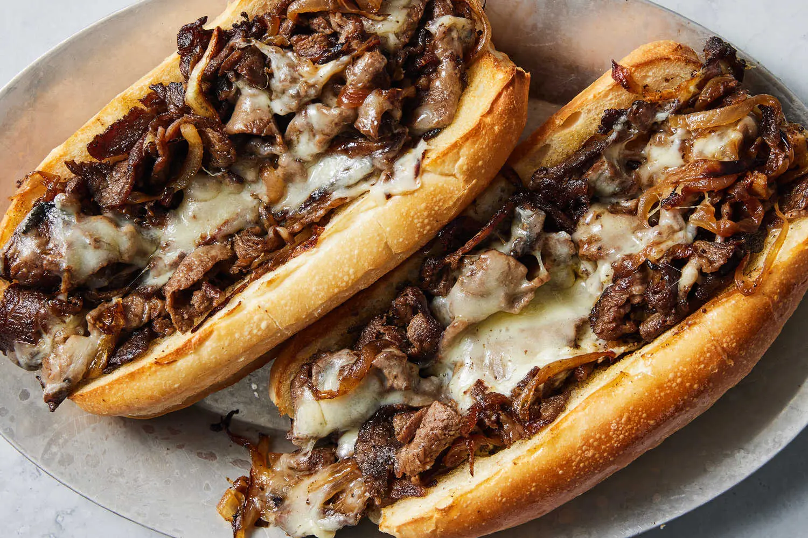

Cheese Steak

Description
A cheesesteak is a sandwich featuring thinly sliced beef, typically ribeye, sautéed or grilled, and melted cheese,
usually on a hoagie or torpedo roll. It's a popular regional sandwich, with its roots in Philadelphia, Pennsylvania
Ingredients
- Thinly sliced ribeye or brisket
- Salt & pepper
- Hoagie roll
- Mayo
- Onions
- Olive Oil
- Provolone Cheese
- Garlic
Steps
- Heat a skillet on medium-high heat with some olive oil.
- Add sliced onions into the pan and sweat until brown.
- Remove the onions into a separate bowl.
- Then evenly distribute the ribeye on the skillet and leave it undisturbed for 4 minutes to develop a flavorful crust.
- Flip and cook the rest of the ribeye until brown.
- Add garlic and the onions from the bowl with the skillet on medium-low heat.
- Place the provolone cheese slices in a line approximately the same length as your hoagie roll.
- Slice your hoagie roll and add a layer of mayonaise on both sides.
- Once the cheese has melted, place your cheesesteak into the hoagie roll and enjoy.
Home